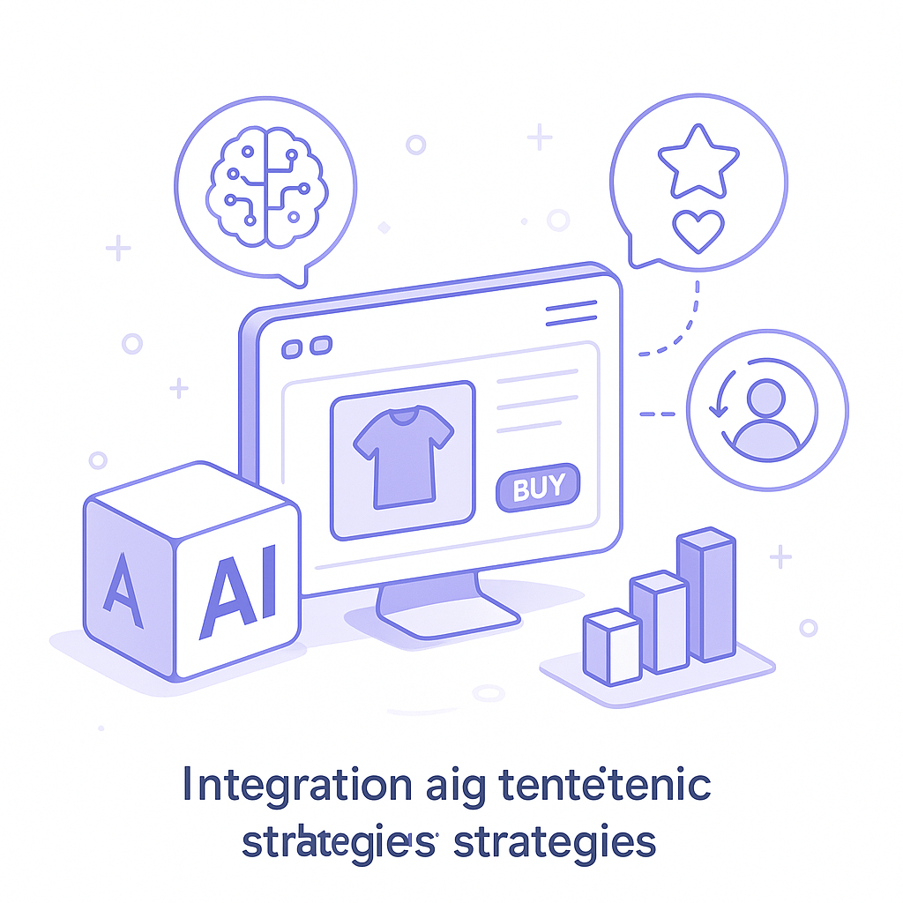
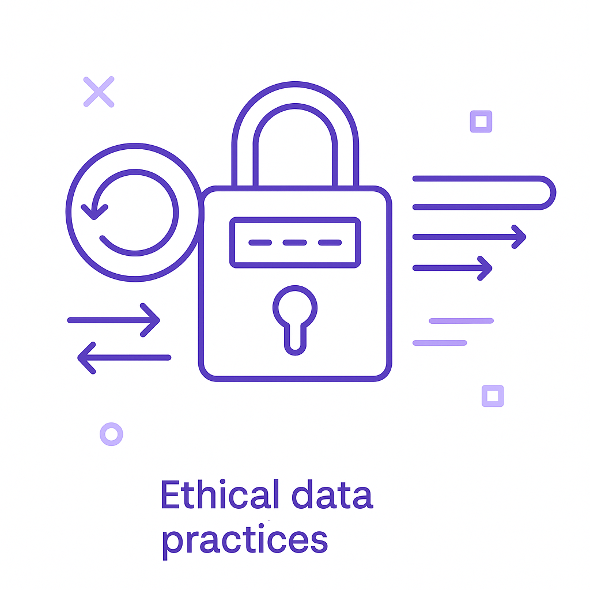
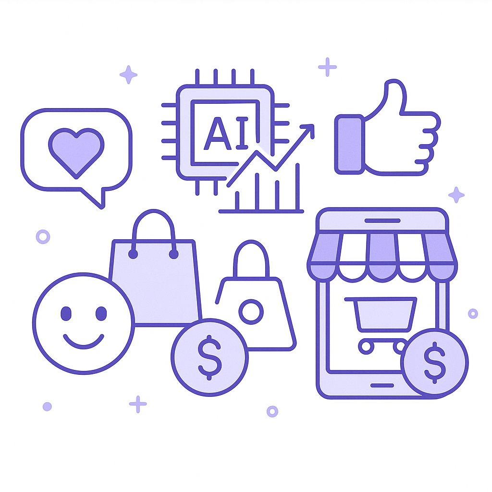
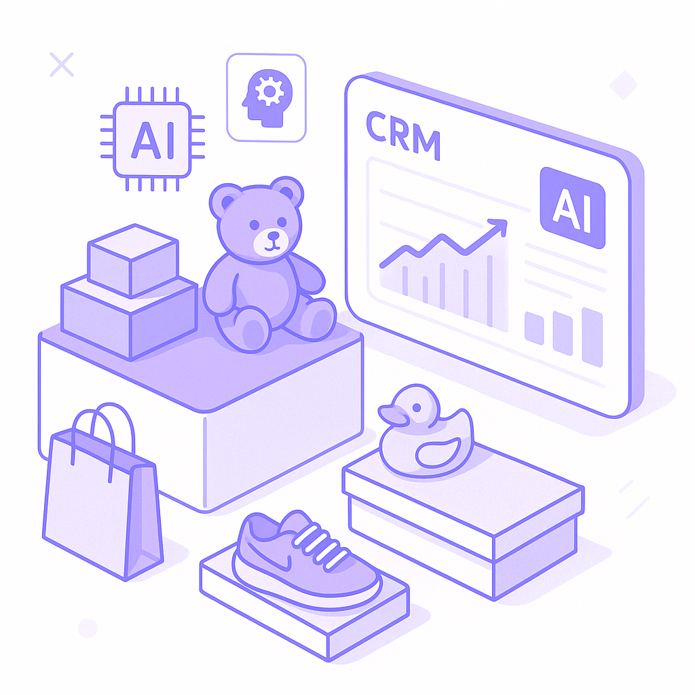

Publishing Recommendation
reviseSeveral posts contain vague claims and lack specificity about how Purands AI's offerings directly relate to the trends. They need clearer connections between trends and product benefits, avoiding generic statements.
Today's batch touches on some significant trends, but the connection between these trends and Purands AI's offerings needs clearer articulation. Posts should avoid making sweeping claims about AI's impact without concrete examples or evidence. Ensure the tone remains practical and insightful, focusing on how Purands AI's solutions tangibly address the challenges highlighted by each trend.
LinkedIn Posts (10)
1. WhatsApp commerce ★ Purands solution · high priority
CTA: Have you tried integrating gamified experiences into your customer engagement strategies?

Image prompt · flat-vector
Caption: Gamified customer engagement through AI.
Alternative hooks
- Bluesky's Attie app is revolutionizing how we think about social commerce.
- Can AI truly boost customer retention in WhatsApp commerce?
- Gamification in commerce isn't just a trend; it's the future.
Research behind this post (sources, summaries & confidence)
Bluesky expands AI-powered Attie app conf 0.80 · WhatsApp commerce
The expansion of Bluesky's AI tool for creating social apps could enhance social commerce, providing new avenues for engagement and retention through gamified customer experiences.
Sources & what I took from each
- Bluesky expands AI-powered Attie app: TechCrunch details the expansion of Bluesky's AI-powered Attie app for social app development. ↗ read source
Recent news
- {'headline': "Bluesky's AI app expansion targets social commerce", 'url': 'https://techcrunch.com/2026/10/15/bluesky-expands-its-ai-powered-attie-app-to-let-anyone-build-websites-games-and-more/'}
Original trend links
Risks / caveats
- Potential oversaturation of social app market
- Privacy concerns with AI-driven engagement
2. Liquid AI releases LFM2.5-24B-A2B model for on-device agents ★ Purands solution · high priority
CTA: How do you see on-device AI changing your customer engagement strategy?

Image prompt · soft-isometric
Caption: On-device AI for enhanced privacy and personalization.
Alternative hooks
- The future of AI is on your device.
- On-device AI is transforming customer engagement.
- Can your CRM data be processed locally?
Research behind this post (sources, summaries & confidence)
Liquid AI releases LFM2.5-24B-A2B model for on-device agents conf 0.80 · AI industry
The release of a powerful on-device AI model could shift how customer data is processed and personalized, enhancing CRM and retention marketing efforts.
Sources & what I took from each
- Liquid AI releases LFM2.5-24B-A2B model for on-device agents: MarkTechPost covers the release of Liquid AI's new on-device model, emphasizing its capabilities. ↗ read source
Recent news
- {'headline': 'Liquid AI launches on-device model for data processing', 'url': 'https://www.marktechpost.com/2026/10/14/liquid-ai-lfm2-5-24b-a2b/'}
Original trend links
Risks / caveats
- Potential device compatibility issues
- Trade-offs between model complexity and device performance
3. Opsin raises $21M to tackle AI agents in businesses ★ Purands solution · high priority
CTA: How do you ensure transparency in your AI systems?

Image prompt · flat-vector
Caption: Transparency in AI for better customer engagement.
Alternative hooks
- Transparency in AI is not just a buzzword.
- Ever wondered what your AI agents are actually doing?
- How transparent are your AI-driven customer strategies?
Research behind this post (sources, summaries & confidence)
Opsin raises $21M to tackle AI agents in businesses conf 0.75 · AI startups
Opsin’s focus on transparency of AI agent activities can enhance trust and compliance in customer data management, crucial for retention marketing and CRM enhancement.
Sources & what I took from each
- Opsin raises $21M for AI agent transparency: Techmeme reports Opsin's successful funding round focused on AI agent transparency. ↗ read source
Recent news
- {'headline': 'Opsin secures $21M for AI transparency', 'url': 'https://www.techmeme.com/261015/p56#a261015p56'}
Original trend links
Risks / caveats
- Challenges in implementing transparency in complex AI systems
- Potential for increased regulatory scrutiny
4. Google Releases Gemini 4 Argon API ★ Purands solution · high priority
CTA: How do you see advanced APIs shaping customer engagement in your industry?

⬇ Download image
Image prompt · soft-isometric
Caption: Leveraging AI tools for better retention.
Alternative hooks
- Google's Gemini 4 Argon API is the talk of the town.
- AI just got a new tool with Google's latest release.
- How Google's new API changes the retention landscape.
Research behind this post (sources, summaries & confidence)
Google Releases Gemini 4 Argon API conf 0.75 · AI industry
New AI capabilities from Google could influence how businesses leverage AI for customer engagement and retention, particularly in personalization and predictive analytics.
Sources & what I took from each
- Google releases Gemini 4 Argon API: MarkTechPost reports on Google's release of the Gemini 4 Argon API, highlighting its potential uses in AI development. ↗ read source
Recent news
- {'headline': "Google's new AI API could revolutionize business analytics", 'url': 'https://www.marktechpost.com/2026/10/13/google-gemini-4-argon-api-release/'}
Original trend links
Risks / caveats
- Complexity in API integration
- Potential over-reliance on Google's AI solutions
5. Customer Data Platforms ★ Purands solution · high priority
CTA: How do you navigate data privacy in your retention strategies?

⬇ Download image
Image prompt · flat-vector
Caption: Ethical data use in retention marketing.
Alternative hooks
- Meta's new terms for website scraping are a wake-up call for data privacy.
- Consent and privacy are more crucial than ever in Meta's data-driven world.
- The future of retention marketing hinges on ethical data usage.
Research behind this post (sources, summaries & confidence)
Business accounts will consent to Meta scraping their websites conf 0.70 · Customer Data Platforms
Meta's new terms allowing website scraping raise significant privacy and data usage issues, impacting how businesses can ethically use customer data for retention strategies.
Sources & what I took from each
- Meta updates terms to allow website scraping: NiemanLab discusses Meta's updated terms for website data scraping. ↗ read source
Recent news
- {'headline': "Meta's new terms allow website scraping", 'url': 'https://www.niemanlab.org/2026/10/metas-new-commercial-terms-will-allow-the-scraping-of-news-sites-legal-experts-say/'}
Original trend links
Risks / caveats
- Significant privacy concerns
- Potential backlash from businesses and consumers
6. Connecting AI agents to enterprise knowledge ★ Purands solution · high priority
CTA: How do you think AI integration will change retention marketing in your industry?

Image prompt · soft-isometric
Caption: Connecting AI to enterprise knowledge for retention.
Alternative hooks
- Enhanced data integration is transforming customer data platforms.
- In APAC, mobile and WhatsApp commerce require smarter data strategies.
- Integrating AI with enterprise knowledge isn't just tech; it's strategy.
Research behind this post (sources, summaries & confidence)
Connecting AI agents to enterprise knowledge conf 0.70 · Customer Data Platforms
Integrating AI with enterprise knowledge can enhance customer data platforms, driving more effective retention marketing by leveraging deeper customer insights.
Sources & what I took from each
- Connecting AI agents to enterprise knowledge: Technology Review highlights efforts to link AI agents with enterprise knowledge, enhancing data integration. ↗ read source
Recent news
- {'headline': 'AI integration with enterprise knowledge boosts data platforms', 'url': 'https://www.technologyreview.com/2026/10/05/1145580/connecting-ai-agents-to-enterprise-knowledge'}
Original trend links
Risks / caveats
- Complexity in integration processes
- Data security concerns with expanded access
7. Moody’s upgrades retail and apparel outlook as tariffs ease ★ Purands solution · high priority
CTA: How are you planning to adjust your retention strategies in light of these changes?
Alternative hooks
- Moody’s upgrade: A game-changer for Shopify retailers.
- Tariffs ease, consumer spending rises - are you ready?
- Retail outlook brightens: Time to double down on retention.
Research behind this post (sources, summaries & confidence)
Moody’s upgrades retail and apparel outlook as tariffs ease conf 0.70 · Shopify ecosystem
Improved economic conditions for retail could enhance consumer spending, impacting retention strategies and growth within the Shopify ecosystem.
Sources & what I took from each
- Moody’s upgrades retail and apparel outlook: Retail Dive reports Moody's positive outlook for the retail sector following tariff adjustments. ↗ read source
Recent news
- {'headline': "Moody's upgrades retail outlook amid easing tariffs", 'url': 'https://www.retaildive.com/news/moodys-retail-apparel-outlook-boosted-tariff-refunds/832964/'}
Original trend links
Risks / caveats
- Potential volatility in tariff policies
- Uneven impact across different retail sectors
8. Bluesky wants to make it easier to buy, sell, and fundraise on the network ★ Purands solution · high priority
CTA: How are you integrating social commerce into your engagement strategies?

⬇ Download image
Image prompt · flat-vector
Caption: Boosting engagement in social commerce.
Alternative hooks
- Bluesky is making social commerce more accessible than ever.
- What's the next frontier for WhatsApp commerce? Bluesky might have the answer.
- Could enhanced social commerce be the key to customer loyalty?
Research behind this post (sources, summaries & confidence)
Bluesky wants to make it easier to buy, sell, and fundraise on the network conf 0.70 · WhatsApp commerce
Enhancing commerce capabilities on social networks could create new opportunities for customer engagement and loyalty programs within WhatsApp commerce strategies.
Sources & what I took from each
- Bluesky enhances commerce capabilities on social networks: TechCrunch article discusses Bluesky's efforts to improve buying, selling, and fundraising on their network. ↗ read source
Recent news
- {'headline': 'Bluesky boosts social network commerce features', 'url': 'https://techcrunch.com/2026/10/15/bluesky-wants-to-make-it-easier-to-buy-sell-and-fundraise-on-the-network/'}
Original trend links
Risks / caveats
- Technical challenges in implementing new features
- User privacy concerns with enhanced commerce capabilities
9. Nordstrom expands FAO Schwarz offerings ★ Purands solution · high priority
CTA: How do you see AI enhancing customer engagement in retail?

⬇ Download image
Image prompt · soft-isometric
Caption: AI-driven CRM strategies for retailers.
Alternative hooks
- Nordstrom's toy aisle just got a lot more interesting.
- Expanding product lines isn't just about variety - it's about engagement.
- What do FAO Schwarz toys have to do with CRM strategy?
Research behind this post (sources, summaries & confidence)
Nordstrom expands FAO Schwarz offerings conf 0.70 · CRM strategy
Expanding product offerings and enhancing app features can boost customer engagement and retention, important for CRM strategies in competitive retail environments.
Sources & what I took from each
- Nordstrom expands FAO Schwarz offerings: Retail Dive details Nordstrom's expansion of FAO Schwarz products and app features. ↗ read source
Recent news
- {'headline': 'Nordstrom boosts holiday offerings with FAO Schwarz', 'url': 'https://www.retaildive.com/news/nordstrom-expands-fao-schwarz-offerings-new-app-features-holiday/832853/'}
Original trend links
Risks / caveats
- Potential inventory management challenges
- Increased competition in the retail space
10. Meta prices Muse Voice Transcribe at $0.18 an hour
CTA: How do you see affordable transcription impacting your industry?
Alternative hooks
- Meta’s new pricing for Muse Voice Transcribe is cheaper than your coffee.
- Could $0.18 an hour for transcription transform your business?
- Real-time speech-to-text for the price of pocket change?
Research behind this post (sources, summaries & confidence)
Meta prices Muse Voice Transcribe at $0.18 an hour conf 0.85 · AI startups
Affordable transcription services could revolutionize how businesses handle customer interactions and feedback, directly impacting CRM and customer engagement strategies.
Sources & what I took from each
- Meta prices Muse Voice Transcribe at $0.18 an hour: VentureBeat reports on the competitive pricing of Muse Voice Transcribe, emphasizing its affordability. ↗ read source
Recent news
- {'headline': "Meta's Muse Voice Transcribe offers affordable transcription services", 'url': 'https://venturebeat.com/technology/meta-prices-muse-voice-transcribe-at-0-18-an-hour-with-real-time-diarization-for-20-speakers-a-steal-for-enterprises'}
Original trend links
Risks / caveats
- Potential data privacy concerns with voice data
- Market competitiveness may lead to price undercutting
Today's Trends
| # | Trend | Category | Why it matters |
|---|---|---|---|
| 1 | Meta launches an open-weight AI model that runs on Macs
source |
AI industry | Meta's collaboration with Apple to bring the Muse Spark Open AI model to Macs signifies a strong move towards democratizing access to advanced AI tools, which could influence retention marketing strategies by enabling more personalized and interactive customer experiences. |
| 2 | Meta prices Muse Voice Transcribe at $0.18 an hour
source |
AI startups | Affordable transcription services could revolutionize how businesses handle customer interactions and feedback, directly impacting CRM and customer engagement strategies. |
| 3 | Opsin raises $21M to tackle AI agents in businesses
source |
AI startups | Opsin’s focus on transparency of AI agent activities can enhance trust and compliance in customer data management, crucial for retention marketing and CRM enhancement. |
| 4 | Bluesky expands AI-powered Attie app
source |
WhatsApp commerce | The expansion of Bluesky's AI tool for creating social apps could enhance social commerce, providing new avenues for engagement and retention through gamified customer experiences. |
| 5 | Business accounts will consent to Meta scraping their websites
source |
Customer Data Platforms | Meta's new terms allowing website scraping raise significant privacy and data usage issues, impacting how businesses can ethically use customer data for retention strategies. |
| 6 | Anthropic lets METR researchers access AI models
source |
AI industry | Anthropic's transparency move could set a precedent for AI accountability, which is crucial for trust in AI-driven customer engagement and retention tools. |
| 7 | Connecting AI agents to enterprise knowledge
source |
Customer Data Platforms | Integrating AI with enterprise knowledge can enhance customer data platforms, driving more effective retention marketing by leveraging deeper customer insights. |
| 8 | Liquid AI releases LFM2.5-24B-A2B model for on-device agents
source |
AI industry | The release of a powerful on-device AI model could shift how customer data is processed and personalized, enhancing CRM and retention marketing efforts. |
| 9 | Moody’s upgrades retail and apparel outlook as tariffs ease
source |
Shopify ecosystem | Improved economic conditions for retail could enhance consumer spending, impacting retention strategies and growth within the Shopify ecosystem. |
| 10 | RPKI now protects 70% of internet routes
source |
AI industry | Enhanced internet security through RPKI is crucial for protecting customer data and maintaining trust in AI-driven marketing platforms. |
| 11 | Lululemon restructures raw materials team
source |
Product management | Changes in supply chain management could affect product availability and pricing, impacting marketing strategies and customer retention efforts. |
| 12 | Bluesky wants to make it easier to buy, sell, and fundraise on the network
source |
WhatsApp commerce | Enhancing commerce capabilities on social networks could create new opportunities for customer engagement and loyalty programs within WhatsApp commerce strategies. |
| 13 | Google Releases Gemini 4 Argon API
source |
AI industry | New AI capabilities from Google could influence how businesses leverage AI for customer engagement and retention, particularly in personalization and predictive analytics. |
| 14 | Nordstrom expands FAO Schwarz offerings
source |
CRM strategy | Expanding product offerings and enhancing app features can boost customer engagement and retention, important for CRM strategies in competitive retail environments. |
Risk Assessment
- Potential over-promising capabilities of AI tools without clear evidence or examples.
- Possible data privacy concerns not adequately addressed in posts discussing sensitive data handling.
Suggested LinkedIn Comments (30)
Open each post, then paste the copied comment. Nothing is posted automatically.
1. opinion · rss:techcrunch.com — The new car used thrusters to leap over a Cybercab, Cybertruck, Tesla Semi, Mode
Post by: rss:techcrunch.com
Why it works: It challenges the focus on flashy demos by emphasizing the value of practical applications.
↗ Open LinkedIn post to paste comment2. insight · rss:techcrunch.com — The company generated over $30 million in revenue in two years and was acquired
Post by: rss:techcrunch.com
Why it works: It highlights key factors in startup success, aligning with the post's theme of growth and acquisition.
↗ Open LinkedIn post to paste comment3. expansion · rss:techcrunch.com — Intero Biosystems beat out 199 other Startup Battlefield companies to take home
Post by: rss:techcrunch.com
Why it works: It acknowledges the achievement while explaining the broader benefits of such competitions.
↗ Open LinkedIn post to paste comment4. insight · rss:techcrunch.com — Panay said that it's possible to recover and learn from all sorts of failures, e
Post by: rss:techcrunch.com
Why it works: It builds on the post's theme by emphasizing the constructive role of failure in innovation.
↗ Open LinkedIn post to paste comment5. insight · rss:techcrunch.com — Meta and Apple have teamed up for the launch of the social media giant's newest
Post by: rss:techcrunch.com
Why it works: It highlights the implications of the partnership, adding depth to the post's announcement.
↗ Open LinkedIn post to paste comment6. opinion · rss:techcrunch.com — Speaking at TechCrunch Disrupt, Amazon devices chief Panos Panay described a fut
Post by: rss:techcrunch.com
Why it works: It provides a balanced view, acknowledging both the potential and challenges of ambient AI.
↗ Open LinkedIn post to paste comment7. insight · rss:techcrunch.com — The executives argued that advertising isn’t the only path to monetization, and
Post by: rss:techcrunch.com
Why it works: It broadens the scope of the post by discussing viable alternatives to traditional monetization methods.
↗ Open LinkedIn post to paste comment8. insight · rss:techcrunch.com — METR will publish its own assessments of Anthropic’s risks, incidents, and pract
Post by: rss:techcrunch.com
Why it works: It highlights the significance of transparency in AI development, adding a layer of analysis to the post.
↗ Open LinkedIn post to paste comment9. insight · rss:techcrunch.com — Bluesky is bringing “social vibe coding” to its experimental Attie platform, all
Post by: rss:techcrunch.com
Why it works: It emphasizes the potential impact of the feature on user engagement, enhancing the post's announcement.
↗ Open LinkedIn post to paste comment10. insight · rss:techcrunch.com — Savings of up to $200 end October 16 for TechCrunch Founder Summit. These saving
Post by: rss:techcrunch.com
Why it works: It highlights the intangible benefits of attending such events, beyond the immediate networking opportunities.
↗ Open LinkedIn post to paste comment11. opinion · rss:www.theverge.com — Elon Musk promised a flying car. And the Tesla Roadster did exactly that. Tesla
Post by: rss:www.theverge.com
Why it works: It challenges the emphasis on spectacle over practical innovation, offering a grounded perspective.
↗ Open LinkedIn post to paste comment12. insight · rss:www.theverge.com — Valve is introducing a major new feature for Steam achievements called "achievem
Post by: rss:www.theverge.com
Why it works: It highlights how the new feature could positively impact user engagement, adding a layer of depth to the post.
↗ Open LinkedIn post to paste comment13. insight · rss:www.theverge.com — OpenAI's ChatGPT Atlas browser is gone, but now ChatGPT's Google Chrome extensio
Post by: rss:www.theverge.com
Why it works: It connects the feature to real user behavior, showing practical value and understanding of user needs.
↗ Open LinkedIn post to paste comment14. respectful challenge · rss:www.theverge.com — Sega is removing Total War: Shogun 2 - Complete Edition from storefronts followi
Post by: rss:www.theverge.com
Why it works: It challenges the reliance on AI for quality assurance, emphasizing the need for human oversight.
↗ Open LinkedIn post to paste comment15. insight · rss:www.theverge.com — Though movies about disruptive tech founders are nothing new, 2026 has been unus
Post by: rss:www.theverge.com
Why it works: It identifies a broader cultural trend and its implications, adding depth to the discussion of the film industry.
↗ Open LinkedIn post to paste comment16. opinion · rss:www.theverge.com — President Donald Trump posted a series of photos on Truth Social showing off ren
Post by: rss:www.theverge.com
Why it works: It takes a clear ethical stance on AI's role in media, emphasizing the importance of truthfulness.
↗ Open LinkedIn post to paste comment17. expansion · rss:www.theverge.com — Bluesky's Attie AI tool, which initially launched earlier this year as a way to
Post by: rss:www.theverge.com
Why it works: It highlights the potential for user empowerment and innovation, expanding on the post's initial information.
↗ Open LinkedIn post to paste comment18. respectful challenge · rss:www.theverge.com — If you're a new user of Withings' fitness-tracking smartwatches or smart scales
Post by: rss:www.theverge.com
Why it works: It questions the balance between monetization and user satisfaction, providing a critical perspective.
↗ Open LinkedIn post to paste comment19. opinion · rss:www.theverge.com — Meta announced the Muse Spark Open AI model today, claiming that it's the "most
Post by: rss:www.theverge.com
Why it works: It grounds the claim in practical application, calling for evidence of real-world benefits.
↗ Open LinkedIn post to paste comment20. opinion · rss:www.theverge.com — Sony has announced a trio of new Walkman portable media players that start at an
Post by: rss:www.theverge.com
Why it works: It offers a realistic take on market appeal, acknowledging both the nostalgic value and pricing barrier.
↗ Open LinkedIn post to paste comment21. insight · rss:feeds.arstechnica.com — KDE celebrates 30 years with a new Plasma release, a farewell to X11, and a movi
Post by: rss:feeds.arstechnica.com
Why it works: This comment acknowledges KDE's significant change, providing an insightful take on its strategic importance.
↗ Open LinkedIn post to paste comment22. opinion · rss:feeds.arstechnica.com — Discovery data from Plex users will help studios, advertisers.
Post by: rss:feeds.arstechnica.com
Why it works: It presents a balanced view, recognizing benefits while highlighting potential ethical concerns.
↗ Open LinkedIn post to paste comment23. opinion · rss:feeds.arstechnica.com — Medical experts explicitly recommend against blanket screenings.
Post by: rss:feeds.arstechnica.com
Why it works: The comment supports expert opinion with a nod to the trend towards personalized medicine, adding depth to the discussion.
↗ Open LinkedIn post to paste comment24. insight · rss:feeds.arstechnica.com — The incident is likely 1st confirmation of mercenary spyware delivered by target
Post by: rss:feeds.arstechnica.com
Why it works: This comment highlights the broader cybersecurity implications, adding valuable context to the issue.
↗ Open LinkedIn post to paste comment25. insight · rss:feeds.arstechnica.com — Porsche’s turnaround plan for 2035 involves less volume but more expensive cars.
Post by: rss:feeds.arstechnica.com
Why it works: The comment connects Porsche's plan to broader market trends, providing a strategic perspective.
↗ Open LinkedIn post to paste comment26. expansion · rss:feeds.arstechnica.com — Researchers hunted for clues in modal analysis of 20th-century replica bell at P
Post by: rss:feeds.arstechnica.com
Why it works: It expands on the post by highlighting the broader impact and benefits of such research.
↗ Open LinkedIn post to paste comment27. insight · rss:feeds.arstechnica.com — Suspected Russian drones attack chemical tanker within Romanian waters.
Post by: rss:feeds.arstechnica.com
Why it works: This comment broadens the discussion by addressing the implications for international security and regulation.
↗ Open LinkedIn post to paste comment28. opinion · rss:feeds.arstechnica.com — Its effect on people remains an ongoing question.
Post by: rss:feeds.arstechnica.com
Why it works: Acknowledges the uncertainty while emphasizing the importance of research, adding a constructive viewpoint.
↗ Open LinkedIn post to paste comment29. insight · rss:feeds.arstechnica.com — 8 in 10 Americans opposed the Pentagon's plans, a Thursday poll showed.
Post by: rss:feeds.arstechnica.com
Why it works: It adds insight into the implications of public opinion on policy, making the post more relevant to broader governance issues.
↗ Open LinkedIn post to paste comment30. insight · rss:feeds.arstechnica.com — Rocket Lab announced the Neutron rocket in 2021, aiming for a first flight in 20
Post by: rss:feeds.arstechnica.com
Why it works: The comment provides a positive outlook on private space endeavors, linking them to industry trends.
↗ Open LinkedIn post to paste comment